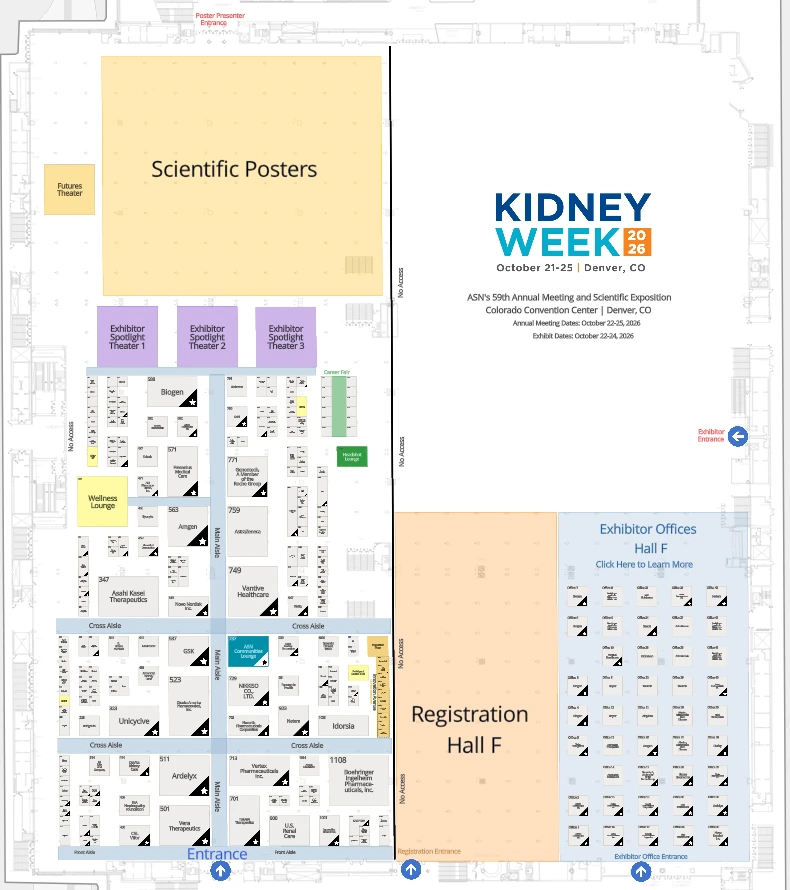

Meet us at ASN Kidney Week 2026.
See XKIDNEY in person in Denver. Stop by booth #1059.
- Exhibit hall
- Oct 22–24, 2026 · 3 days
- Venue
- Colorado Convention Center, Denver
- Booth
- #1059

exorenal · 1059Exorenal will exhibit at ASN Kidney Week 2026, the American Society of Nephrology's annual meeting. The meeting runs October 22–25 at the Colorado Convention Center in Denver, with the exhibit hall open October 22–24.
At the booth you can see the 29 kg XKIDNEY hemodialysis system up close and talk with our team. To book a meeting ahead of time, get in touch below.
- Thu, Oct 229:30 a.m. – 2:30 p.m. MDT
- Fri, Oct 239:30 a.m. – 2:30 p.m. MDT
- Sat, Oct 249:30 a.m. – 2:30 p.m. MDT
Hours are from ASN and may change.
Look back: ASN Kidney Week 2024Photos from our San Diego booth ASN Kidney Week official siteProgram and registration